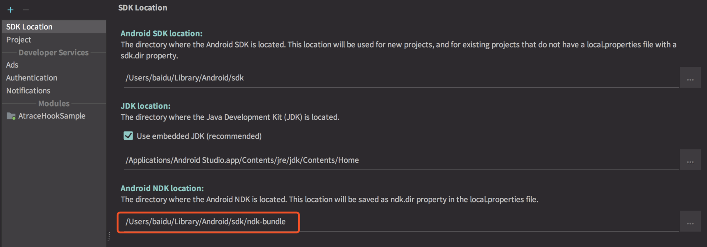
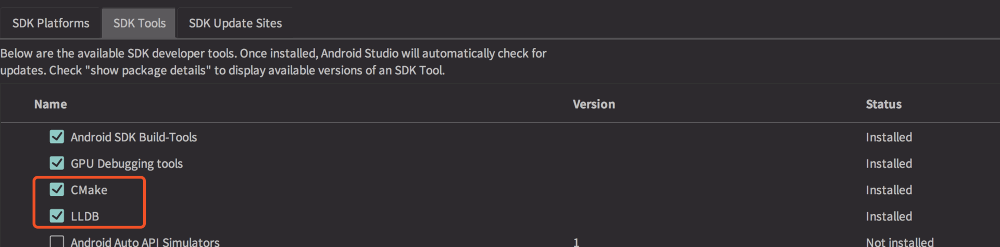
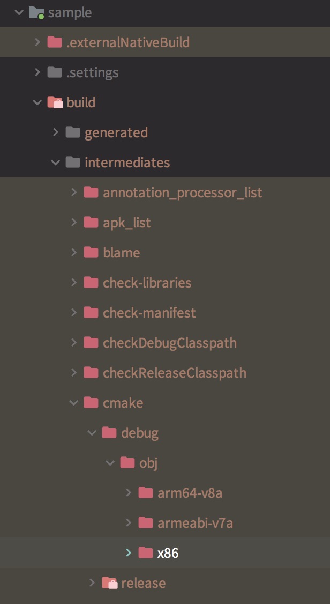
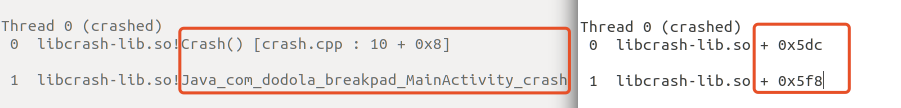
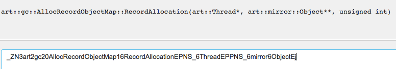

- 00 导读 如何打造高质量的应用？.md
- 00 开篇词 焦虑的移动开发者该如何破局？.md
- 01 崩溃优化（上）：关于“崩溃”那些事儿.md
- 02 崩溃优化（下）：应用崩溃了，你应该如何去分析？.md
- 03 内存优化（上）：4GB内存时代，再谈内存优化.md
- 04 内存优化（下）：内存优化这件事，应该从哪里着手？.md
- 05 卡顿优化（上）：你要掌握的卡顿分析方法.md
- 06 卡顿优化（下）：如何监控应用卡顿？.md
- 06补充篇 卡顿优化：卡顿现场与卡顿分析.md
- 07 启动优化（上）：从启动过程看启动速度优化.md
- 08 启动优化（下）：优化启动速度的进阶方法.md
- 09 I_O优化（上）：开发工程师必备的I_O优化知识.md
- 10 I_O优化（中）：不同I_O方式的使用场景是什么？.md
- 11 I_O优化（下）：如何监控线上I_O操作？.md
- 12 存储优化（上）：常见的数据存储方法有哪些？.md
- 13 存储优化（中）：如何优化数据存储？.md
- 14 存储优化（下）：数据库SQLite的使用和优化.md
- 15 网络优化（上）：移动开发工程师必备的网络优化知识.md
- 16 网络优化（中）：复杂多变的移动网络该如何优化？.md
- 17 网络优化（下）：大数据下网络该如何监控？.md
- 18 耗电优化（上）：从电量优化的演进看耗电分析.md
- 19 耗电优化（下）：耗电的优化方法与线上监控.md
- 20 UI 优化（上）：UI 渲染的几个关键概念.md
- 21 UI 优化（下）：如何优化 UI 渲染？.md
- 22 包体积优化（上）：如何减少安装包大小？.md
- 23 包体积优化（下）：资源优化的进阶实践.md
- 24 想成为Android高手，你需要先搞定这三个问题.md
- 25 如何提升组织与个人的研发效能？.md
- 26 关于编译，你需要了解什么？.md
- 27 编译插桩的三种方法：AspectJ、ASM、ReDex.md
- 28 大数据与AI，如何高效地测试？.md
- 29 从每月到每天，如何给版本发布提速？.md
- 30 数据评估（上）：如何实现高可用的上报组件？.md
- 31 数据评估（下）：什么是大数据平台？.md
- 32 线上疑难问题该如何排查和跟踪？.md
- 33 做一名有高度的移动开发工程师.md
- 34 聊聊重构：优秀的架构都是演进而来的.md
- 35 Native Hook 技术，天使还是魔鬼？.md
- 36 跨平台开发的现状与应用.md
- 37 移动开发新大陆：工作三年半，移动开发转型手游开发.md
- 38 移动开发新大陆：Android音视频开发.md
- 39 移动开发新大陆： 边缘智能计算的趋势.md
- 40 动态化实践，如何选择适合自己的方案？.md
- 41 聊聊Flutter，面对层出不穷的新技术该如何跟进？.md
- 42 Android开发高手课学习心得.md
- Android JVM TI机制详解（内含福利彩蛋）.md
- Android工程师的“面试指南”.md
- Native下如何获取调用栈？.md
- 专栏学得苦？可能你还需要一份配套学习书单.md
- 专栏学得苦？可能是方法没找对.md
- 程序员修炼之路 设计能力的提升途径.md
- 练习Sample跑起来 ASM插桩强化练习.md
- 练习Sample跑起来 唯鹿同学的练习手记 第1辑.md
- 练习Sample跑起来 唯鹿同学的练习手记 第2辑.md
- 练习Sample跑起来 唯鹿同学的练习手记 第3辑.md
- 练习Sample跑起来 热点问题答疑第1期.md
- 练习Sample跑起来 热点问题答疑第2期.md
- 练习Sample跑起来 热点问题答疑第3期.md
- 练习Sample跑起来 热点问题答疑第4期.md
- 结束语 移动开发的今天和明天.md
- 聊聊Framework的学习方法.md
练习Sample跑起来 热点问题答疑第1期
你好，我是专栏的“学习委员”孙鹏飞。
专栏上线以来很多同学反馈，说在运行练习Sample的时候遇到问题。由于这些Sample多是采用C/C++来完成的，所以在编译运行上会比传统的纯Java项目稍微复杂一些。今天我就针对第1期～第4期中，同学们集中遇到的问题做一期答疑。设置练习的目的，也是希望你在学习完专栏的内容后，可以快速上手试验一下专栏所讲的工具或方法，帮你加快掌握技术的精髓。所以希望各位同学可以多参与进来，有任何问题也可以在留言区给我们反馈，后面我还会不定期针对练习再做答疑。
编译环境配置
首先是同学们问得比较多的运行环境问题。
前几期的练习Sample大多是使用C/C++开发的，所以要运行起来需要先配置好SDK和NDK，SDK我们一般都是配置好的，NDK环境的配置有一些特殊的地方，一般我们的Sample都会使用最新的NDK版本，代码可能会使用C++11/14的语法进行编写，并且使用CMake进行编译，我这里给出NDK环境的配置项。
首先需要去NDK官网下载最新版本，下载后可以解压到合适的地方，一般macOS可以存放在 ANDROID_SDK_HOME/ndk_bundle目录下，Android Studio可以默认找到该目录。如果放到别的目录，可能需要自己指定一下。
指定NDK目录的方法一般有下面两种。
1.在练习Sample根目录下都会有一个local.properties文件，修改其中的ndk.dir路径即可。
ndk.dir=/Users/sample/Library/Android/sdk/ndk-bundle
sdk.dir=/Users/sample/Library/Android/sdk
2.可以在Android Studio里进行配置，打开File -> Project Structure -> SDK Location进行修改。

上面两种修改方法效果是一致的。
有些Sample需要降级NDK编译使用，可能需要下载旧版本的NDK，可以从官网下载。
之后需要安装CMake和LLDB。
这两项都可以在Tools > Android > SDK Manager里进行安装。

这样我们编译所需要的环境就配置好了。
热点问题答疑
关于第1期的Sample，同学们遇到的最多的问题是使用模拟器运行无法获取Crash日志的问题。
引起这个问题的缘由比较深层，最直观的原因是使用Clang来编译x86平台下的Breakpad会导致运行出现异常，从而导致无法抓取日志。想要解决这个问题，我们需要先来了解一下NDK集成的编译器。
NDK集成了两套编译器：GCC和Clang。从NDK r11开始，官方就建议使用Clang，详情可以看ChangeLog，并且标记GCC为Deprecated，并且从GCC 4.8升级到4.9以后就不再进行更新了。NDK r13开始，默认使用Clang。NDK r16b以后的版本貌似强制开启GCC会引起错误，并将libc++作为默认的STL，而NDK r18干脆就完全删除了GCC。
由于Clang的编译会引起x86的Breakpad执行异常，所以我们需要切换到GCC下进行编译，步骤如下。
1.首先将NDK切换到r16b，你可以从这里下载，在里面找到对应你操作系统平台的NDK版本。
2.在Android Studio里设置NDK路径为ndk-16b的路径。
3.在练习例子源码的sample和breakpad-build的build.gradle配置里进行如下配置。
externalNativeBuild {
cmake {
cppFlags "-std=c++11"
arguments "-DANDROID_TOOLCHAIN=gcc"
}
}
第二个问题是日志解析工具如何获取。
解析Minidump日志主要是使用minidump_stackwalk工具，配合使用的工具是dump_syms，这个工具可以获取一个so文件的符号表。
这两项工具需要通过编译Breakpad来获取，有部分同学查到的文章是采用Chrome团队的depot_tools来进行工具的源码下载、编译操作。depot_tools是个很好用的工具，但是在国内其服务器是无法访问的，所以我们采用直接下载源码编译的方式相对来说比较方便。
编译Breakpad有一些需要注意的地方，由于Android平台的内核是Linux，Android里的动态链接库的符号表导出工具dump_syms需要运行在Linux下（暂时没有找到交叉编译在别的平台上的办法），所以下面的步骤都是在Linux环境（Ubuntu 18.04）下进行的，步骤如下。
1.先下载源码。
2.由于源码里没有附带上一些第三方的库，所以现在编译会出现异常，我们需要下载lss库到Breakpad源码目录src/third_party下面。
git clone https://chromium.googlesource.com/linux-syscall-support
3.然后在源码目录下执行。
./configure && make
make install
这样我们就可以直接调用minidump_stackwalk、dump_syms工具了。
第三个问题是如何解析抓取下来的Minidump日志。
生成的Crash信息，如果授予Sdcard权限会优先存放在/sdcard/crashDump下，便于我们做进一步的分析。反之会放到目录/data/data/com.dodola.breakpad/files/crashDump下。
你可以通过adb pull命令拉取日志文件。
adb pull /sdcard/crashDump/
1.首先我们需要从产生Crash的动态库中提取出符号表，以第1期的Sample为例，产生Crash的动态库obj路径在Chapter01/sample/build/intermediates/cmake/debug/obj下。

此处需要注意一下手机平台，按照运行Sample时的平台取出libcrash-lib.so库进行符号表的dump，然后调用dump_syms工具获取符号表。
dump_syms libcrash-lib.so > libcrash-lib.so.sym
2.建立符号表目录结构。首先打开刚才生成的libcrash-lib.so.syms，找到如下编码。
MODULE Linux arm64 322FCC26DA8ED4D7676BD9A174C299630 libcrash-lib.so
然后建立如下结构的目录Symbol/libcrash-lib.so/322FCC26DA8ED4D7676BD9A174C299630/，将libcrash-lib.so.sym文件复制到该文件夹中。注意，目录结构不能有错，否则会导致符号表对应失败。
3.完成上面的步骤后，就可以来解析Crash日志了，执行minidump_stackwalk命令。
minidump_stackwalk crash.dmp ./Symbol > dump.txt
4.这样我们获取的crash日志就会有符号表了，对应一下之前没有符号表时候的日志记录。

5.如果我们没有原始的obj，那么需要通过libcrash-lib.so的导出符号来进行解析，这里用到的工具是addr2line工具，这个工具存放在$NDK_HOME/toolchains/arm-linux-androideabi-4.9/prebuilt/darwin-x86_64/bin/arm-linux-androideabi-addr2line下。你要注意一下平台，如果是解析64位的动态库，需要使用aarch64-linux-android-4.9下的addr2line（此处是64位的）。
aarch64-linux-android-addr2line -f -C -e libcrash-lib.so 0x5f8
Java_com_dodola_breakpad_MainActivity_crash
6.可以使用GDB来根据Minidump调试出问题的动态库，这里就不展开了，你可以参考这里。
针对这一期的Sample，很多同学询问Sample中经常使用的Hook框架的原理。
Sample中使用的Hook框架有两种，一种是Inline Hook方案（Substrate和HookZz），一种是PLT Hook方案（Facebook Hook），这两种方案各有优缺点，根据要实现功能的不同采取不同的框架。
PLT Hook相对Inline Hook的方案要稳定很多，但是它操作的范围只是针对出现在PLT表中的动态链接函数，而Inline Hook可以hook整个so里的所有代码。Inline Hook由于要针对各个平台进行指令修复操作，所以稳定性和兼容性要比PLT Hook差很多。
关于PLT Hook的内容，你可以看一下《程序员的自我修养：链接、装载与库》这本书，而Inline Hook则需要对ARM、x86汇编，以及各个平台下的过程调用标准（Procedure Call Standard）有很深入的了解。
第3期里，还有部分同学询问Sample中的函数符号是如何来的。
首先如果我们要hook一个函数，需要知道这个函数的地址。在Linux下我们获取函数的地址可以通过dlsym函数来根据名字获取，动态库里的函数名称一般都会通过Name Mangling技术来生成一个符号名称（具体细节可以看这篇文章），所以第3期的Sample里出现了很多经过转换的函数名。
void *hookRecordAllocation26 = ndk_dlsym(handle,
"_ZN3art2gc20AllocRecordObjectMap16RecordAllocationEPNS_6ThreadEPNS_6ObjPtrINS_6mirror6ObjectEEEj");
void *hookRecordAllocation24 = ndk_dlsym(handle, "_ZN3art2gc20AllocRecordObjectMap16RecordAllocationEPNS_6ThreadEPPNS_6mirror6ObjectEj");
这样的函数可以通过c++filt工具来进行反解，我在这里给你提供一个网页版的解析工具。

我们需要阅读系统源码来寻找Hook点，比如第3期里Hook的方法都是虚拟机内存分配相关的函数。需要注意的一点是，要先确认是否存在该函数的符号，很多时候由于强制Inline的函数或者过于短小的函数可能没有对应的符号，这时候就需要使用objdump、readelf、nm或者各种disassembly工具进行查看，根据类名、函数名查找一下有没有对应的符号。
总结
第1期的Breakpad的Sample主要是展示Native Crash的日志如何获取和解读。根据业务的不同，我们平时接触的很多都是Java的异常，在业务不断稳定、代码异常处理逐渐完善的情况下，Java异常的量会逐渐减少，而Native Crash的问题会逐步的显现出来。一般比较大型的应用，都会或多或少包含一些Native库，比如加密、地图、日志、Push等模块，由于多方面的原因，这些代码会产生一些异常，我们需要了解Crash日志来排查解决，又或者说绕过这些异常，进而提高应用的稳定性。
通过Breakpad的源码，以帮你了解到信号捕获、ptrace的使用、进程fork/clone机制、主进程子进程通信、unwind stack、system info的获取、memory maps info的获取、symbol的dump，以及symbol反解等，通过源码我们可以学习到很多东西。
第2期的Sample提供了解决系统异常的一种思路，使用反射或者代理机制来解决系统代码中的异常。需要说明的是FinalizerWatchdog机制并不是系统异常，而是系统的一种防护机制。很多时候我们会遇到一些系统Framework的bug产生的Crash，比如很常见的Toast异常等，这些异常虽然不属于本应用产生的，但也会影响用户的使用，解决这种异常可以考虑一下这个Sample中的思路。
第3期的Sample描述了一个简单的Memory Allocation Trace监控模块，这个模块主要是配合自动性能分析体系来自动发现问题，比如大对象的分配数量监控、分配对象的调用栈分析等。它可以做的事很多，同学们可以根据这个思路，根据自己的业务来开发适合自己的工具。
从第3期的Sample的代码，你可以学习到Inline Hook Substrate框架的使用，使用ndk_dlopen来绕过Android Classloader-Namespace Restriction机制，以及C++里的线程同步等。
欢迎你点击“请朋友读”，把今天的内容分享给好友，邀请他一起学习。
© 2019 - 2023 Liangliang Lee. Powered by gin and hexo-theme-book.